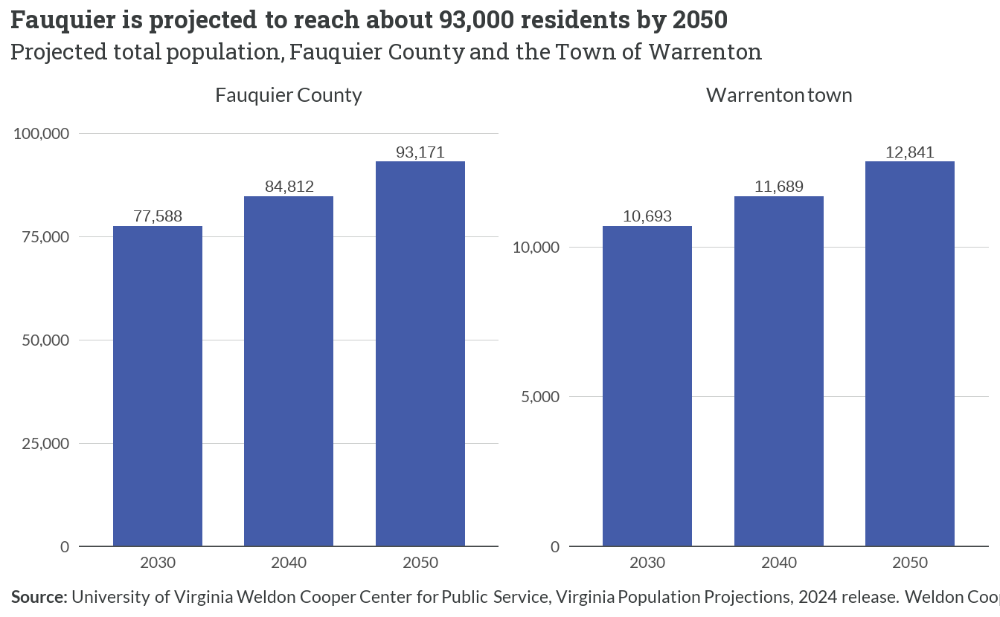
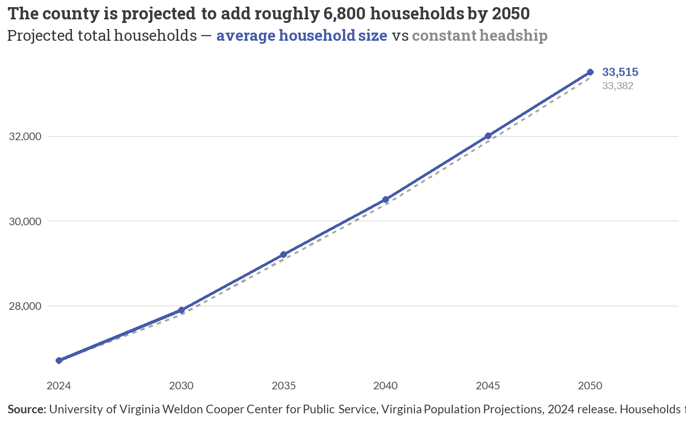
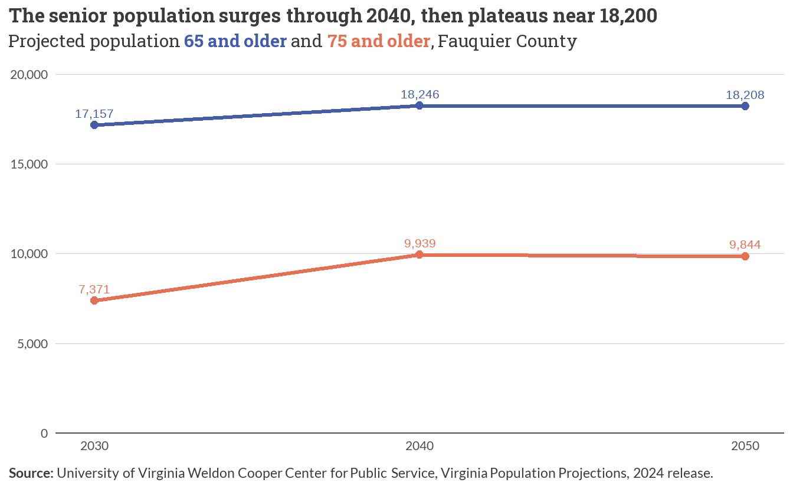

7 Projected Housing Needs
7.1 How many more people: population to 2050
- Fauquier’s population is projected to grow from 74,577 in 2024 to 93,171 by 2050 — an increase of about 18,594 residents (24.9%) that drives every downstream housing-need estimate in this chapter.
- Growth is steady across each decade, from 77,588 in 2030 to 93,171 in 2050 — a 20.1% gain over 2030–2050, outpacing Virginia’s projected 14.2% statewide growth over the same span.
- Warrenton is projected to grow in parallel, from 10,693 (2030) to 12,841 (2050), up 2,148 residents (20.1%); Bealeton has no separate Weldon Cooper projection and is carried through the county totals.
7.2 How many more households

- On the headline average-household-size method, the county grows from 26,720 households in 2024 to 33,515 by 2050 — about 6,795 net new households (25.4%).
- The constant-headship sensitivity nearly coincides with it (33,382 by 2050, 6,662 new households) — a difference of only about 133 households, so the choice of method does not materially change the total.
- This +6,795 figure is the denominator for the production need (Figure 7.3) and the tenure-by-income allocation (Table 7.1) that follow.
7.3 Can production keep pace?

- Through 2050 the county needs about 269 new units per year to house projected growth (plus a 3% vacancy allowance) — essentially level with the 266 units per year it permitted over 2020–2025. On the numbers, recent production roughly keeps pace with projected need.
- The need is front-loaded lighter: only about 204 units/year are required through 2030, rising toward the recent pace as growth compounds — so the near-term pressure is on the type and price of what is built, not the raw count.
- This inverts the Greater Piedmont regional study’s finding that need (307/yr) exceeds the building pace. The difference is the household-size assumption: this study uses the county’s actual 2020–2024 ACS average household size of 2.78, whereas the GP study’s +7,737-household figure back-implies a smaller ~2.7-person household. A larger average size spreads the same population over fewer new households, lowering the annual unit need; the full reconciliation is documented in the Data & Methodology appendix.
- Keeping pace on count is not the same as meeting need: the affordability gaps (Figure 5.4, Figure 5.5) show the recent product mix has skewed to the top of the market, so the forward challenge is composition, taken up in Table 7.1.
7.4 How much does the answer swing? One assumption sets the range
![Column chart of the annual new-housing-units needed through 2050 under three average-household-size assumptions, holding the projected 2050 population fixed at 93,171. If household size holds at 2.78 (the county's actual current average), need is about 269 units per year. If it declines modestly to 2.70, need rises to about 309. If it continues down to 2.60, need reaches about 361. A dashed reference line marks the 2020–2025 building-permit pace of 266 per year, essentially level with the size-holds scenario. The Greater Piedmont regional study's estimate of 307 per year falls between the first two bars, inside the band.](projections_files/figure-html/fig-need-range-1.png)
- The headline number is only as firm as its household-size assumption. Holding the county’s actual 2.78-person average constant yields ~269 units per year; letting size drift down to 2.60 pushes need to ~361 — so a plausible reading of the same population projection spans roughly 269–361 units per year.
- The 269/yr headline is the conservative floor of that band, not its midpoint — it sits essentially on the 2020–2025 permit pace (266/yr), and the Greater Piedmont study’s 307/yr estimate falls inside the range (it back-implies a ~2.7-person household).
- The floor is the locally-grounded case: Fauquier’s own household size has not fallen. It measured about 2.76 in 2010 and 2.76 in 2020 (decennial), and 2.78 in 2024 (ACS) — flat-to-rising, bucking the national downward drift. The 361/yr high end therefore is not an extrapolation of local history; it is a sensitivity that assumes the county begins converging toward the smaller households seen statewide (Virginia averages 2.52).
7.5 From new arrivals to full need: a scope ladder
![Stacked column chart showing cumulative housing units needed through 2050 as the definition of need widens across four steps. Step 1, housing new household growth alone, is about 6,795 units. Step 2 adds a 3% vacancy allowance for about 6,999. Step 3 adds the existing affordability backlog — a data-grounded rental deficit of about 1,059 units plus an assumed ownership component of about 2,539 — reaching about 10,597. Step 4 adds replacement of aging, obsolete stock at an assumed 0.25% per year, about 1,860 units, for a total near 12,457. Each added segment is a distinct color; the ownership-backlog and replacement segments are labeled as assumption-driven.](projections_files/figure-html/fig-scope-ladder-1.png)
- Read strictly, the county needs 6,795 units to house projected household growth — about 261/yr. Adding a 3% vacancy allowance lifts that to 6,999 (269/yr), the published headline.
- Layering in today’s affordability backlog adds roughly 3,598 units — a data-grounded 1,059-unit rental deficit below 80% AMI (Figure 5.4) plus a conservative, assumption-driven 2,539-unit ownership share (one-third of the ~7,616 sub-80%-AMI ownership shortfall; the raw for-sale snapshot is not a build target) — reaching 10,597 (408/yr).
- Finally, replacing aging and obsolete stock — an assumption, since permits capture additions but not demolitions — at a conservative 0.25%/yr of the 28,621-unit stock adds about 1,860 units, for a full-scope total near 12,457 (479/yr). The stock is old — median year built 1987, about 56% built before 1990 — so some replacement demand is real even though its size is assumed.
- The single “units needed” number is a definitional choice, not a fact. Housing only new arrivals points to ~269/yr; also clearing the existing shortfall and replacing obsolete stock roughly doubles that. The two rightmost rungs rest partly on stated assumptions and should be read as scope, not precision.
7.6 An aging county: the 65+ surge

- The 65-and-older population climbs from 17,157 (2030) to 18,246 (2040), then holds essentially flat at 18,208 in 2050 as the leading edge of the baby-boom cohort ages through — the surge is concentrated in the next 15 years.
- The 75-and-older group grows faster and deeper, from 7,371 to 9,939 before easing to 9,844 — so the higher-need older-senior share of all seniors rises from about 43% to 54%.
- This is the forward-looking counterpart to the current-state senior profile in Chapter 6 (65+ already 17% of residents, most owning their homes): the demand signal is for accessible, lower-maintenance, and smaller units — aging-in-place options and downsizing product the current stock largely lacks.
7.7 Where the need lands: tenure and income
| AMI band | Current households | Share of households | Forward need to 2050 | Current affordable-unit gap | Gap basis |
|---|---|---|---|---|---|
| Homeowner | |||||
| ≤30% AMI | 1,524 | 5.9% | 399 | -2,779 | Ownership gap |
| 30-50% AMI | 1,509 | 5.8% | 395 | -2,514 | Ownership gap |
| 50-80% AMI | 1,429 | 5.5% | 374 | -2,323 | Ownership gap |
| 80-100% AMI | 2,035 | 7.8% | 533 | -2,641 | Ownership gap |
| >100% AMI | 13,614 | 52.5% | 3,566 | -15,469 | Ownership gap |
| Renter | |||||
| ≤30% AMI | 1,255 | 4.8% | 329 | -625 | Rental gap |
| 30-50% AMI | 1,005 | 3.9% | 263 | -164 | Rental gap |
| 50-80% AMI | 895 | 3.4% | 234 | -270 | Rental gap |
| >80% AMI | 2,678 | 10.3% | 702 | -2,256 | Rental gap |
| **Source:** University of Virginia Weldon Cooper Center for Public Service, Virginia Population Projections, 2024 release. Current household distribution: HUD CHAS 2018–2022. Existing affordable-unit gap: HDAdvisors gap analysis (affordability-gaps chapter). Forward need allocates the projected +6,795-household growth to 2050 by each cell's current share of households; it sums to +6,795. The current gap is joined by tenure — homeowner bands from the ownership gap, renter bands from the rental gap. Renter 80–100% and >100% AMI are combined into ">80% AMI" because the rental-gap frame uses a coarser top band than the ownership-gap frame; see the Data & Methodology appendix. | |||||
- The projected 6,795 new households split roughly 5,267 owner (78%) to 1,528 renter (22%), following the county’s current tenure and income mix — the single largest block is owner households above 100% AMI (3,566 units).
- Forward growth is not the binding constraint at the bottom — the existing gap is. In the lowest owner and renter bands the current affordable-unit deficit (from Chapter 5) dwarfs the projected new need: even building for all projected growth would leave the existing shortfall untouched.
- Because the allocation holds today’s income distribution constant, it describes where demand will arise, not where it is affordable; read alongside the current gaps (Figure 5.4, Figure 5.5), it frames the forward task as delivering units at price points the recent market (Chapter 3) has not.
7.8 Town spotlight & interview validation
NoteTown spotlight — Warrenton grows with the county; Bealeton is folded into the county total
Weldon Cooper projects the Town of Warrenton to grow from 10,693 residents in 2030 to 12,841 by 2050 (+2,148, 20.1%), a pace close to the county’s own 20.1% over 2030–2050 (Figure 7.1). As the county’s principal water-and-sewer service area, Warrenton is where much of the projected household growth can physically be absorbed. Bealeton is not projected separately — Weldon Cooper publishes totals only for counties and large incorporated towns, and Bealeton is an unincorporated census-designated place — so its share of growth is carried inside the Fauquier County totals throughout this chapter.
7.9 What the interviews said vs. what the data shows
ImportantInterview validation
- “Aging-in-place and downsizing seniors, and returning young people, have no options.” Confirmed and quantified forward. Chapter 6 confirmed the current state; the projections put numbers on the coming pressure. The 65-and-older population grows by roughly 1,089 between 2030 and 2040 before plateauing near 18,208, and the higher-need 75-and-older share of seniors rises from about 43% to 54% (Figure 7.6) — a demand signal for accessible, smaller, lower-maintenance homes. On the young-adult side, the county must add about 269 units per year just to keep pace with household formation (Figure 7.3); with almost nothing for sale below 100% AMI today (Figure 5.5), returning young households face the same entry barrier. The interview claim holds: the options gap is real now and widens as the county ages.